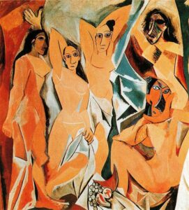
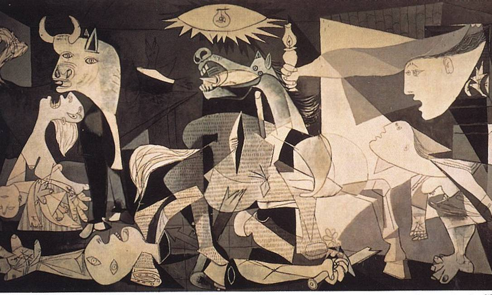

O Cubismo foi um movimento artístico que revolucionou a forma de representar a realidade. Em vez de mostrar o mundo de forma fiel, os artistas passaram a utilizar formas geométricas e múltiplos pontos de vista ao mesmo tempo, criando composições inovadoras e marcantes.

Les Demoiselles d'Avignon
Pablo Picasso
Considerada uma das obras mais importantes da arte moderna, esta pintura rompe com a representação tradicional do corpo humano. As figuras são fragmentadas e apresentam influências geométricas, marcando o início do cubismo.

Guernica
Pablo Picasso
Esta obra expressa o sofrimento causado pela guerra. Com formas distorcidas e tons dramáticos, Picasso transmite dor, caos e emoção, transformando a pintura em um poderoso símbolo contra a violência.